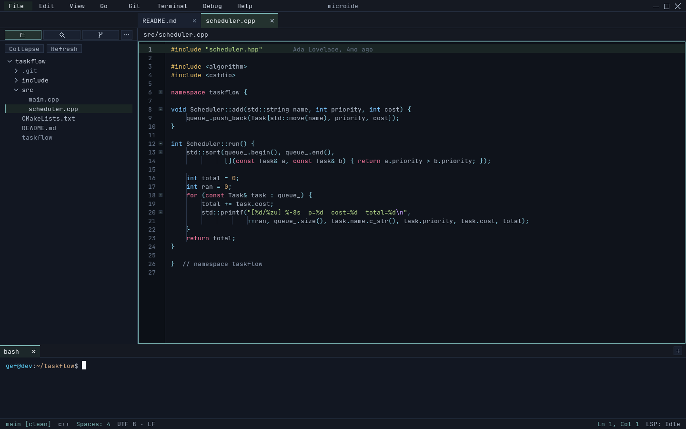
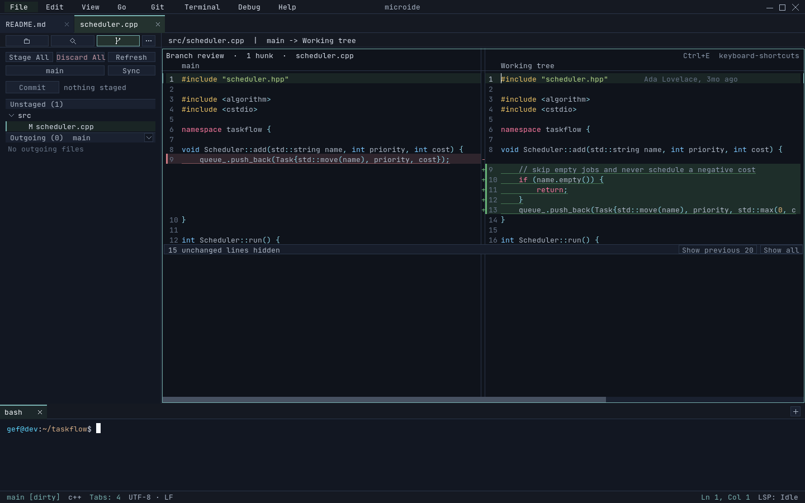
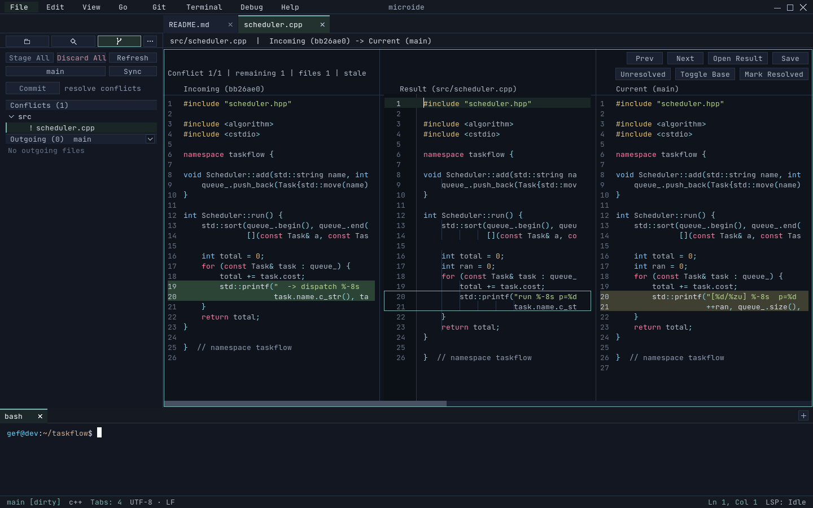
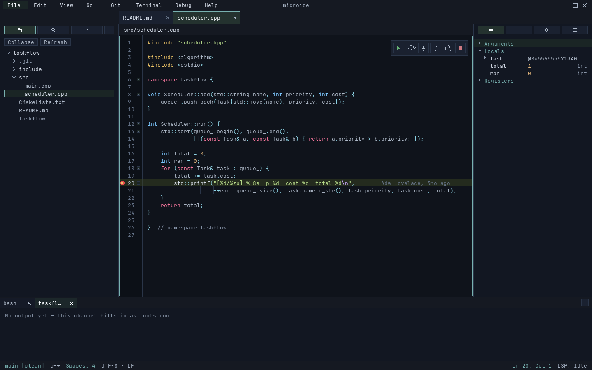
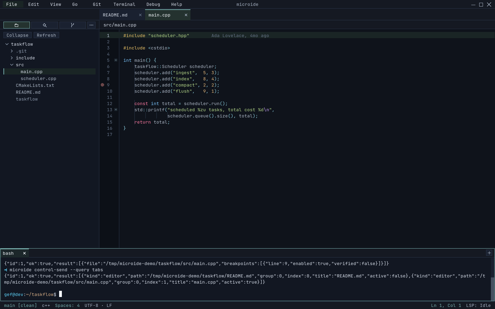

why microide
Built around a few firm principles
Fast & low footprint
Built for responsiveness on commodity hardware: it runs on a software renderer and uses the GPU only to speed up text when one is present. Hot paths — startup, typing, scrolling, diff, and search — are guarded by an automated performance harness with committed baselines, so regressions fail the build instead of shipping.
Private & local — no telemetry
The core editor makes no network connections — no networking library is even linked. No accounts, no telemetry, no update checks, no phoning home. Your code, project state, and session never leave the machine. There is nothing to opt out of, because nothing is collecting anything.
Open source (MIT)
Released under the MIT license. Read it, build it, fork it, ship it. Issues and pull requests are welcome on GitHub.
Native & keyboard-first
A single-window native app that runs without requiring a GPU. A command palette fronts every action, so you can stay on the keyboard from open to commit — and the same commands are scriptable over the control channel.
the big idea
Drive the IDE with an LLM — a different kind of AI editor
Most "AI IDEs" bolt a chatbot into a side panel. microide does the opposite: it exposes the whole command palette over an external control channel, so an LLM agent can actually operate the editor — open files, set breakpoints, launch and step the debugger, and read program state — then stream the results back as JSONL. The model drives a real IDE instead of guessing at one.
Everything routes through the same chokepoint as the command palette — the channel adds a transport and vocabulary, not a parallel code path. Full reference: control-channel.md.
# Drive a running instance and stream results as JSONL microide --control --control-spec /tmp/debug.spec.json # One-shot client — no socket plumbing, no hand-written JSON microide control-send breakpoint-function-add main microide control-send --query launch-configs microide control-send debug-run ./build/app --wait stopped # What the agent reads back on stdout: {"event":"ready","pid":1234,"socket":"…"} {"id":1,"ok":true,"feedback":"…"} {"event":"stopped","reason":"breakpoint", "file":"src/main.cpp","line":42,"threadId":1}
Commands & protocol above are from the project docs — real, not illustrative.
Let an agent debug for you
Set breakpoints, launch, and step entirely over the channel
(breakpoint-set, debug-run,
debug-step-over) while the agent reads
debug-state and reacts to stopped
events — even stepping backwards when the adapter supports it.
Hand the model a failing run, let it set a breakpoint, continue to it, inspect
locals, and step — backwards too, when the adapter supports it — without you
touching the mouse.
One-command, reproducible setups
A --control-spec JSON opens a project with breakpoints and a
launch config already applied before the window is even interactive.
Check one spec file into your repo and anyone — teammate or agent — can reopen the
exact same debug scenario on the first launch.
Script the whole IDE
The channel mirrors the command palette, so any tool can drive the editor headlessly — open files, run commands, query state — and stream JSONL events back. Reach for it in CI smoke tests, reproducible bug reports, or custom agent loops — anywhere you'd otherwise script a human clicking through the UI.
what works today
A full IDE shell, not a toy
Every workflow below is implemented and regression-tested today — not a roadmap.
Editor
- Multi-project & file tabs, nested splits
- UTF-8 aware, IME preedit, line-ending preservation
- Multi-caret editing & region highlighting
- Syntax highlighting with checkpointed state
- Undo/redo with word-level coalescing
- Async git blame shadow text
- Session restore across restarts
Diff & Merge
- Compare working tree vs HEAD or any commit
- Three-way merge with per-hunk picks
- Shared decorated text-grid pipeline
- Change-overview lane beside the scrollbar
[/]hunk navigation
Git
- Sidebar: changes, staged, conflicts, outgoing
- Per-file stage / discard, bulk stage-all
- Conflicts open straight into a merge tab
- Editable commit message, branch/commit picker
Search
- Parallelized project search, literal or regex
- Count-all totals with match highlighting
- Replace-in-project (literal & regex, with capture groups)
- File finder overlay with cached index
Terminal
- PTY-backed tabs with scrollback & selection
- Alternate-screen, bracketed paste, OSC 52 copy
- Tab drag reordering
- Copy last command + output
Debugger (DAP)
- Full DAP client, multi-session
- Line / conditional / function breakpoints, logpoints
- Step over / in / out, pause, restart
- Reverse continue & step back (when supported)
- Call stack, variables, watch, hover-to-inspect
- Debug console REPL · bundled
gdb-dap
Plugins (Lua 5.4)
- Lifecycle hooks, commands, tree sidebars
- Editor decorations: gutter marks, EOL text, code lenses
- Content surfaces: charts & previews, inline or in a panel
- Ghost-text suggestions & host-owned buffer edits
- Language providers: defs, refs, signature, symbols
- Themes, file-icon themes & rich status items
- Runs off the UI thread; hot reload (Linux)
LSP & Tools
- LSP client transport
- Tool downloader with SHA verification
- Native file-watch backend (inotify on Linux)
the table stakes
Everything you expect from an IDE
The boring fundamentals, done right — and verified by the test suite, not just claimed.
- Syntax highlighting — checkpointed, fast in large files
- Multi-tab editing — projects, files, and splits
- Split panes — nested, shared-buffer
- Project-wide search — literal & regex, replace
- File finder — cached, fuzzy overlay (Ctrl+P)
- Integrated git — stage, commit, diff, merge
- Integrated terminal — real PTY-backed tabs
- Debugging — breakpoints, stepping, variables
- Multi-caret editing — with position remap
- Session restore — picks up where you left off
- Plugins — extend it in Lua
- Keyboard-first — VSCode-style shortcuts, command palette for the rest
security & trust
Honest about what it does — and doesn't — protect
Plugins run in-process, but under an enforced per-plugin capability sandbox: filesystem access is contained to the project, process execution is default-deny, and rendering contributions are size-capped data the host draws. It's meaningfully contained — not full isolation — and the docs say so plainly.
Capability-sandboxed plugins
- Filesystem access contained to the project root
- Process execution is default-deny
- Formatters / LSPs / tasks rejected without
process.exec - Rendering contributions are size-capped data the host draws — plugins never touch the frame
Linux hardening
- Plugin children + language servers confined with Landlock
- Writes limited to the project + plugin data dir
- Optional seccomp IPv4/IPv6 socket block
Safe by default
- User-scope plugins only — repo-local plugin trees are ignored
- Opening a cloned repo never runs plugin code from it
--safe-mode/--disable-pluginsfor unfamiliar repos
see it running
See it for yourself
One single-window shell — editor, source control, debugger, and a scriptable control channel. These are captured straight from the running app and regenerated on every release, so they never drift from what you build.





under the hood
Boring, dependable building blocks
get started
Get it running
Grab the signed Debian package from Releases, or build from source in two commands.
Install the prebuilt package — Linux (amd64)
# Download the .deb, its .asc signature, .sha256, and microide-signing-key.asc from Releases gpg --import microide-signing-key.asc gpg --verify microide_<version>_amd64.deb.asc microide_<version>_amd64.deb sha256sum -c microide_<version>_amd64.deb.sha256 sudo dpkg -i microide_<version>_amd64.deb
.deb, a detached GPG
signature, and a checksum — verify both before installing, or build from source below.
Build from source
# Deps (Debian/Ubuntu). PCRE2 is required; Lua/ttf/fontconfig recommended. sudo apt-get install -y cmake ninja-build pkg-config \ libsdl3-dev libsdl3-ttf-dev libpcre2-dev liblua5.4-dev libfontconfig-dev cmake -S . -B build cmake --build build -j8 ./build/microide/microide
Package it yourself
# Build & install your own .deb (Linux) ./scripts/package-deb.sh sudo ./scripts/install-deb.sh
Linux (amd64) is the supported target today; build from source on other platforms. File issues and feature requests on GitHub.